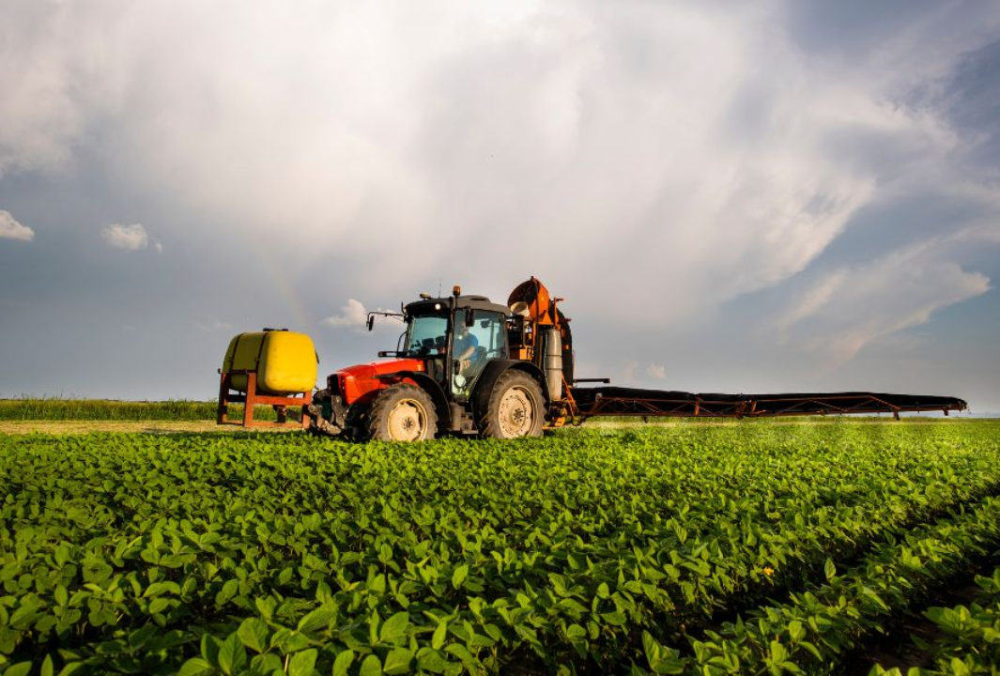

Land for Rent
Looking for a farm space? We have 5 acres of prime agricultural land available for rent in the countryside. Great for crop production or livestock.
Price: $500 per month
Tractor for Sale
Buy a high-power tractor for your farming needs! We offer well-maintained equipment that will make your farming tasks easier and more efficient.
Price: $15,000
Collaboration Opportunity: Crop Sharing
Seeking farmers interested in collaborating on growing organic crops! Share resources, land, and labor to produce high-quality products.
Farming Tip: Organic Pest Control
Check out our new guide on how to manage pests organically without harmful chemicals. Keep your crops healthy and safe for consumers!